Hospital Admission & Length of Stay (LOS) Modelling
Utilizing R and Random Forest Classification to predict patient discharge cycles and optimize resource allocation across two major cities.
Dataset
Over 100,000 records across City A and City B, focusing on 1984-1985 admission cycles.
Method
Log-linear regression and Random Forest classification (Short/Medium/Long stay categories).
Key Result
Achieved 70.8% classification accuracy, significantly outperforming random chance baselines.
Tools Used
R, Linear Regression, Random Forest, STL Decomposition, ggplot2.
Section 1: Data transformation
Initial summary statistics revealed a significant gap between mean and median Length of Stay (LOS). While the mean hovered around 4 days, maximum stays reached 249 days, indicates that a few patients stay an extremely long time (outliers), the histogram gets compressed on the left side (most patients with short stays).
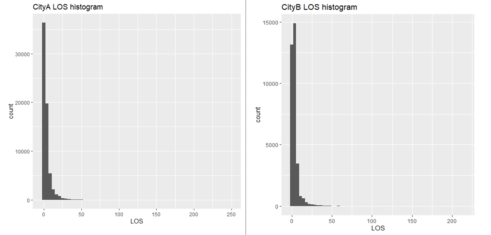
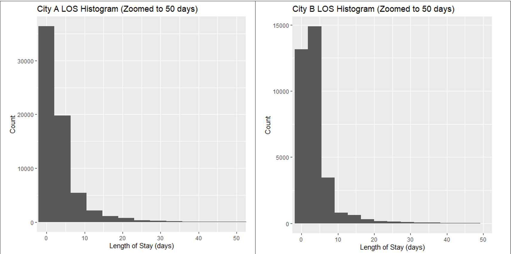
The histogram shows that the LOS distribution was highly right-skewed, with most patients discharged within a few days and only a small number staying significantly longer. This causes problems for linear regression because linear models assume the errors are normally distributed and homoscedastic. These assumptions are violated since predictions become biased, and outliers dominate the fit. For this reason, I log-transformed LOS to reduce the skew and make variance more constant across the range. This stabilised the variance and ensured that extreme outliers didn't bias the predictions, allowing for a more robust analysis of the "bulk" of patient stays.
Section 2: Visualising Operational Flow
Using STL Decomposition, I identified clear weekly seasonality in bed occupancy. Bed occupancy for both cities (city A on the left and city B on the right) starts lower in early July 1984, it stabilises around 700-900 beds for city A, around 400 beds for city B with mild weekly fluctuations, the plot below shows this more clearly. There is a dip around December-January 1985, this likely reflects holiday periods (Christmas, New Year) with fewer elective admissions, to ensure staff can take leave and critical cases are prioritised. The dips at the start and end of the year are due to incomplete data coverage. This weekend discharge delay suggests that hospital operational capacity, rather than just clinical need, influences LOS.
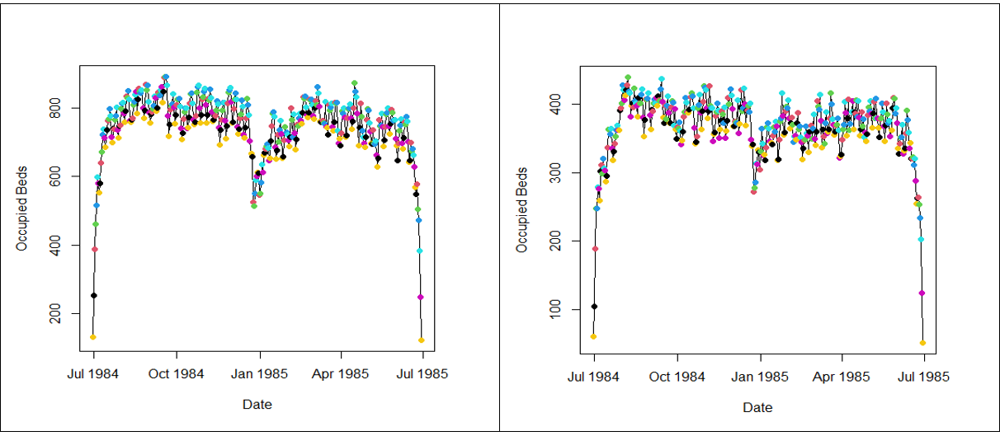
The plot display the bed count over a two-month period for city A (left) and city B (right). Both plots show a clear, recurring weekly cycle in bed occupancy. The peaks tend to occur during mid-week (Tuesday – green, Wednesday – blue) and drop on weekends (Saturday – yellow, Sunday – black). This might be because patients are discharged at the end of the week, and fewer patients are admitted for non-urgent reasons, leading to a temporary drop in bed count before the cycle restarts. In terms of size, city A is approximately double the bed count of city B, which is consistent with the volume differences seen in the Event Types plots. Both cities show significant drops in bed counts at the end of December, possibly due to major holiday season as discussed above.
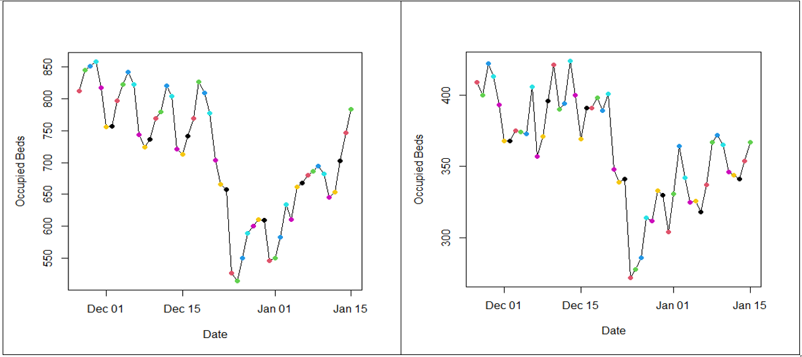
A patient admitted on a Friday often faces a longer LOS than a Monday admission for the same condition, simply due to reduced staffing and services over the weekend.
Section 3: Demographic & Clinical Drivers
My exploration of non-clinical variables provided several key insights:
- Age: Non-linear relationship. Both plots show a high concentration of points in the low area, indicating short stay is very common (typically under 25 days). The range of LOS in both cities seems to decrease with age. For example, there are many high LOS values (outliers > 150 days) for patients aged under 60, especially for age 0, which is intuitive because it represents the newborn and infant population, reasons might be prematurity, diagnosed with congenital conditions or birth complications; however these outliers become rarer as age increases.
- Deprivation: City A's cohort is drawn from higher deprivation areas (Index 10), correlating with slightly longer stays (2-6% increase).
- Health Specialties: Specialty P43 (Paediatric Neonatal Intensive Care) showed the longest average LOS, reaching nearly 30 days.
- Ethnicity: From the bar plots, European is the dominant ethnicity in both cities. Asian and Pasifika is the next most common ethnicities in city A but these figures are much lower for city B. The second largest ethnicity in city B is Māori (nearly 5000). The median LOS is consistent across all ethnic groups in both cities. However for city A, the "Unknown" ethnicity group shows a lower median LOS, suggesting these are mostly very short stays. All groups show high variability, with many extreme long-stay outliers. There are no major ethnic disparities in the typical length of stay. These suggest that LOS is not strongly influenced by ethnicity in both cities.
- Event Types: The type of admission is one of the strongest predictors of stay duration. By analysing box plots across both cities, several distinct patterns emerged.
- IP (Non-psychiatric Inpatient): Most common category, showing a median LOS of approximately 2 days.
- BT (Birth Event): Shows a slightly longer median of 5 days, with an upper tail similar to IP admissions.
- ID (Intended Day Case): Shortest LOS, with a median of exactly 1 day, indicating rapid 24-hour discharge cycles.
- IM (Psychiatric Inpatient): Unique to City B, this category shows a significantly higher median LOS, indicating that psychiatric care is a primary driver of City B's long-term bed occupancy.
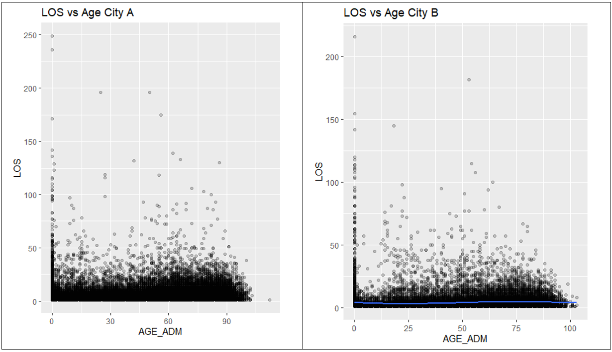
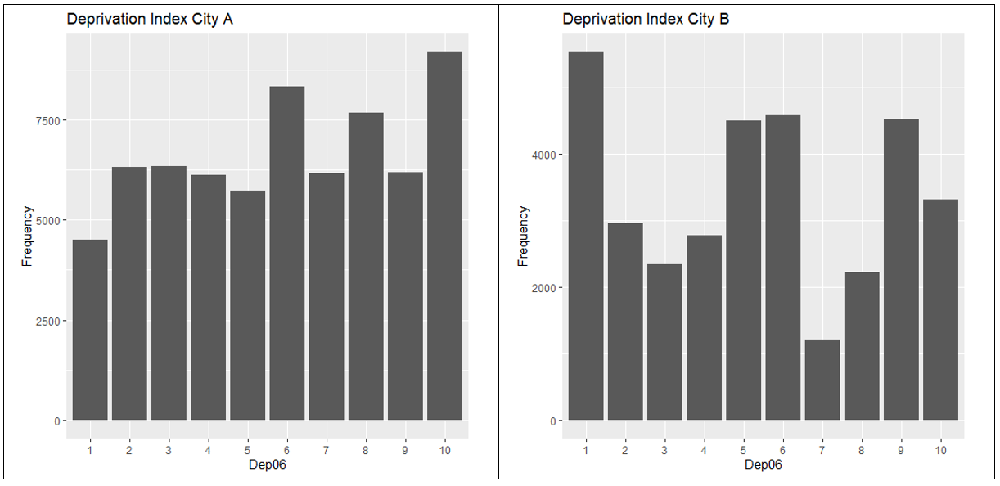
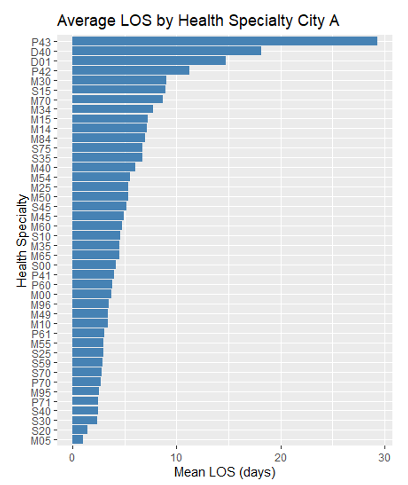
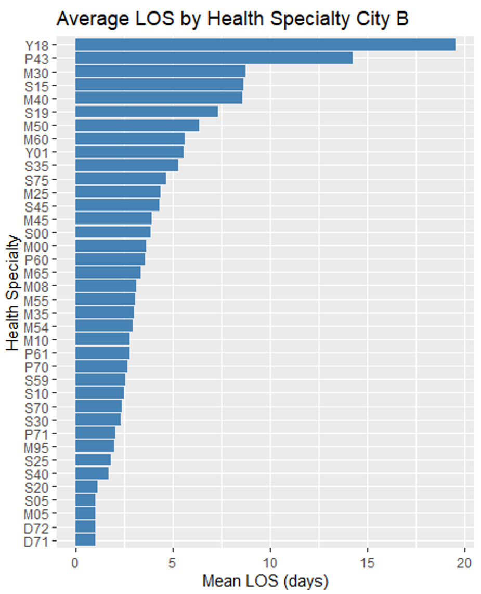
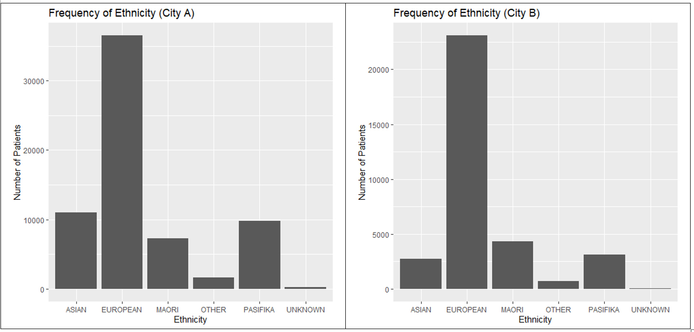
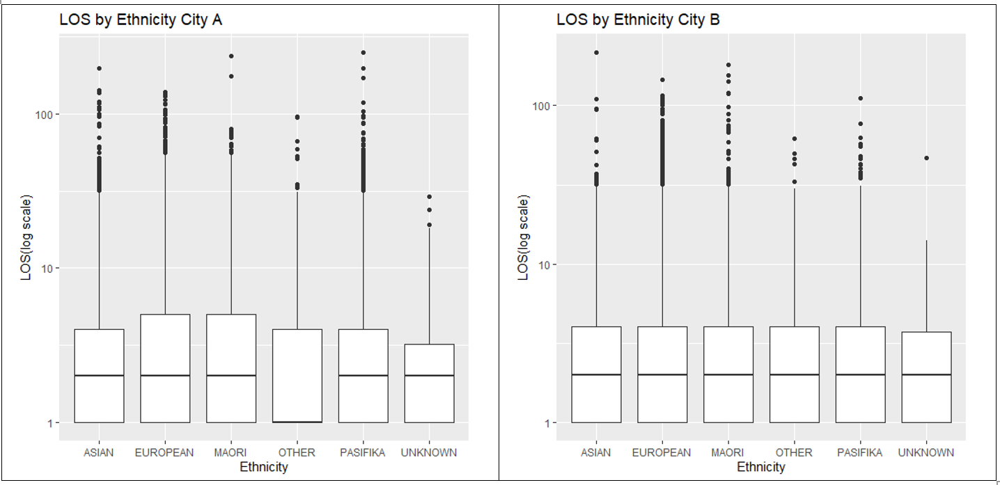
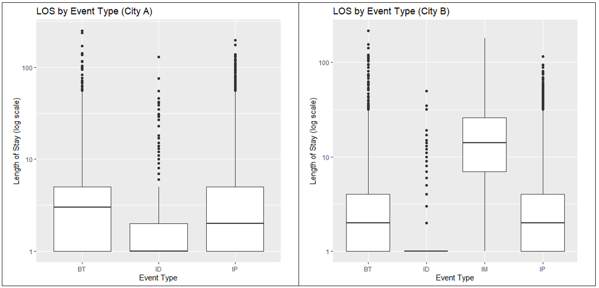
Section 4: The Modeling Strategy
Phase 1: Log-Linear Regression
The initial regression models explained 22% (City A) and 27% (City B) of the variation. While statistically significant, the "unexplained" portion highlighted the impact of unobserved clinical severity.
Phase 2: Transition to Random Forest Classification
Recognising the limitations of predicting exact days, I switched to a classification approach: Short (1-3 days), Medium (4-7 days), and Long (>7 days) stays. This matches operational needs for bed planning.
Technical Implementation: Random Forest in R
# Implementing Random Forest for LOS Category Prediction
cA$LOS_Category <- cut(cA$LOS,
breaks = c(-Inf, 3, 7, Inf),
labels = c("Short", "Medium", "Long"),
right = TRUE)
cB$LOS_Category <- cut(cB$LOS,
breaks = c(-Inf, 3, 7, Inf),
labels = c("Short", "Medium", "Long"),
right = TRUE)
cA$LOS_Category <- as.factor(cA$LOS_Category)
run_rf_cv <- function(data, reps = 100, train_ratio = 0.9) {
formula <- LOS_Category ~ AGE_ADM + GENDER + EVENT_TYPE + HLTHSPEC + Dep06 + Weekday + is_holiday
acc_vals <- replicate(reps, test.rf(data, formula, perc.train = train_ratio))
list(mean_accuracy = mean(acc_vals))
}
results_rf_cityA <- run_rf_cv(cA)
results_rf_cityA
$mean_accuracy
[1] 0.6765039
results_rf_cityB <- run_rf_cv(cB)
results_rf_cityB
$mean_accuracy
[1] 0.7079066
Results: The model achieved 67.65% accuracy for City A and 70.79% for City B. Given the 3-class nature, this is a massive improvement over the 33.3% random baseline, proving the model successfully captured operational signals.
Section 5: Diagnosis-Specific Deep Dive (R074)
To test if focusing on a single diagnosis improved precision, I analyzed R074 (Chest Pain). Interestingly, the model for City A outperformed the mean (RRSE 0.96), while City B did not (RRSE 1.01). The model predictions are essentially random noise relative to the mean. Compared with the previous results for classification, in regression, city B failed to beat the mean, suggesting poor precision in predicting the exact number of days even after accounting for a single diagnosis; but in classification, it achieves higher accuracy than city A in predicting the category. This implies that random forest handles non-linearity and complex interactions better than linear models. The model successfully found a non-clinical signal in city A, but failed to do so in city B. This suggests that for this specific diagnosis, LOS in city A is more influenced by predictable operational factors or demographic factors, while LOS in city B is either highly random or driven by unobserved clinical factors (e.g., unrecorded comorbidities or severity scores).
Summary Statistics and plots to explore the structure of the diagnosis data in detail
nrow(cA_diag); nrow(cB_diag)
[1] 556
[1] 500
summary(cA_diag$LOS)
Min. 1st Qu. Median Mean 3rd Qu. Max.
1.000 1.000 1.000 1.473 1.000 22.000
summary(cB_diag$LOS)
Min. 1st Qu. Median Mean 3rd Qu. Max.
1.00 1.00 1.00 1.41 1.00 50.00
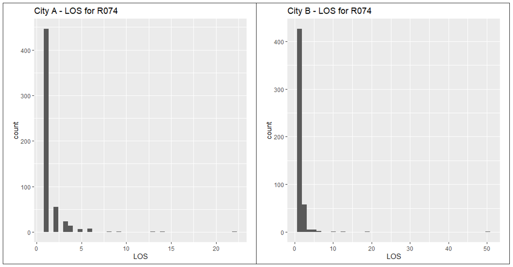
Section 6: Strategic Recommendations
Predicting LOS remains a complex challenge due to censored data (patients staying beyond the study period) and unmeasured clinical severity. There are some approaches to break the problem down into more tractable aspects for managing admissions and predicting LOS.
1. Localised Modeling
Avoid nationwide "one-size-fits-all" models. Differences between City A and B prove that local resource constraints and demographics require tailored algorithms.
2. Enhanced Feature Engineering
Integrate Patient Acuity Scores and Staffing Levels. The current model proves that "Day of the Week" is a major driver; adding real-time resource data would bridge the accuracy gap.
In conclusion, while clinical factors are paramount, hospital operational flow is a statistically significant driver of Length of Stay. These models provide a foundation for more efficient bed management and staffing schedules.